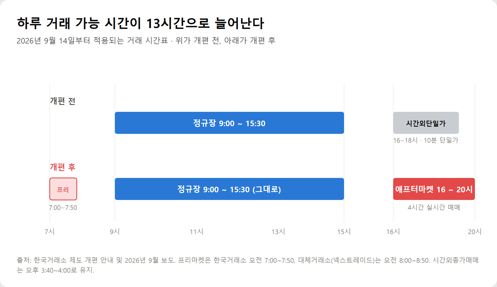
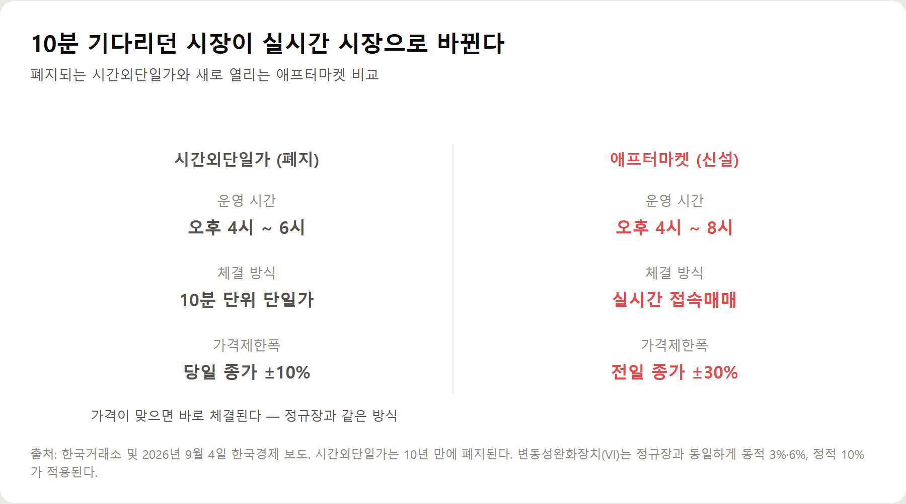
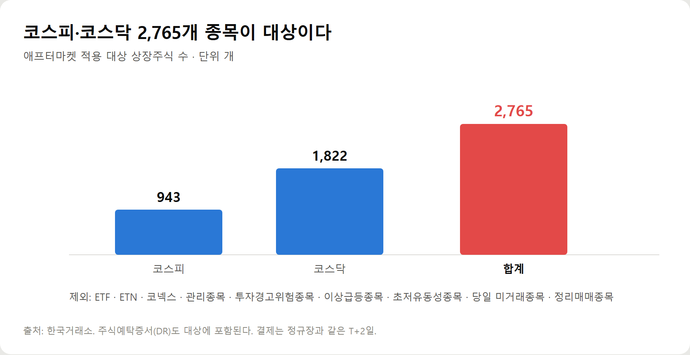
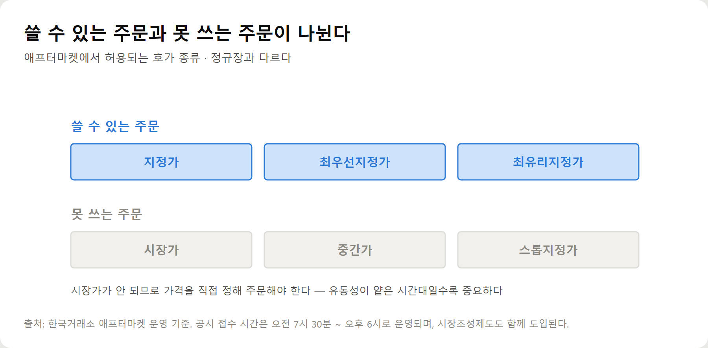

<meta charset="utf-8">
<title>9월 14일부터 밤 8시까지 주식 거래 — 나의 투자 그리고 행복한 여행</title>
<meta name="description" content="주식 거래시간 개편 2026년 9월 14일 — 시간외단일가 폐지, 애프터마켓 오후 4~8시 실시간 접속매매, 가격제한폭 ±30%, 대상 2,765개 종목.">
<meta name="viewport" content="width=device-width, initial-scale=1">
<link rel="canonical" href="https://danielmoon82.github.io/moon/posts/trading-hours-2026-09-14.html">
<link rel="preconnect" href="https://fonts.googleapis.com">
<link rel="preconnect" href="https://fonts.gstatic.com" crossorigin>
<link rel="stylesheet" href="https://fonts.googleapis.com/css2?family=Hahmlet:wght@400;600;800&family=IBM+Plex+Mono:wght@400;500&family=IBM+Plex+Sans+KR:wght@300;400;500;600&display=swap">

<style>
  :root{
    --paper:#F2EEE6;--surface:#FAF8F3;--surface-2:#E7E1D5;
    --ink:#191510;--ink-2:#4A4235;--ink-3:#7D7364;
    --line:#D6CEBF;--line-soft:#E4DDD0;--accent:#B06A15;--accent-bright:#C2761A;
    --up:#E5484D;--down:#3B82F6;
    --f-display:"Hahmlet",'Nanum Myeongjo',"Apple SD Gothic Neo",serif;
    --f-body:"IBM Plex Sans KR","Apple SD Gothic Neo","Malgun Gothic",sans-serif;
    --f-mono:"IBM Plex Mono","SFMono-Regular",Consolas,monospace;
    --pad:clamp(20px,5vw,64px);
  }
  @media (prefers-color-scheme:dark){
    :root:not([data-theme="light"]){
      --paper:#0B1120;--surface:#121A2C;--surface-2:#1A2439;
      --ink:#E9EEF7;--ink-2:#A9B5C9;--ink-3:#72809A;
      --line:#26314A;--line-soft:#1D2739;--accent:#E8A33D;--accent-bright:#F0B45C;
    }
  }
  *{box-sizing:border-box;}
  body{margin:0;background:var(--paper);color:var(--ink);font-family:var(--f-body);
    font-weight:300;font-size:1rem;line-height:1.75;-webkit-font-smoothing:antialiased;}
  a{color:inherit;}
  img{max-width:100%;height:auto;}
  .wrap{max-width:760px;margin:0 auto;padding-inline:var(--pad);}
  .nav{position:sticky;top:0;z-index:20;background:color-mix(in srgb,var(--paper) 88%,transparent);
    backdrop-filter:saturate(180%) blur(12px);border-bottom:1px solid var(--line);}
  .nav-in{display:flex;align-items:center;justify-content:space-between;height:58px;}
  .brand{font-family:var(--f-display);font-weight:600;font-size:1rem;letter-spacing:-.02em;text-decoration:none;}
  .back{font-family:var(--f-mono);font-size:.72rem;color:var(--ink-3);text-decoration:none;}
  .article{padding-block:clamp(40px,7vw,72px) clamp(56px,9vw,96px);}
  .eyebrow{font-family:var(--f-mono);font-size:.68rem;letter-spacing:.16em;text-transform:uppercase;
    color:var(--accent);margin:0 0 14px;}
  h1{font-family:var(--f-display);font-weight:800;font-size:clamp(1.6rem,4.4vw,2.3rem);
    line-height:1.3;letter-spacing:-.03em;margin:0 0 16px;}
  .byline{font-family:var(--f-mono);font-size:.72rem;color:var(--ink-3);
    padding-bottom:24px;border-bottom:1px solid var(--line);margin-bottom:32px;}
  h2{font-family:var(--f-display);font-weight:600;font-size:1.25rem;letter-spacing:-.02em;margin:42px 0 14px;}
  h3{font-family:var(--f-display);font-weight:600;font-size:1.05rem;letter-spacing:-.02em;
    margin:30px 0 10px;padding-top:14px;border-top:1px solid var(--line-soft);}
  h3 .code{font-family:var(--f-mono);font-size:.7rem;font-weight:400;color:var(--ink-3);margin-left:6px;}
  p{margin:0 0 18px;color:var(--ink-2);}
  ul.checks{margin:0 0 18px;padding-left:20px;color:var(--ink-2);}
  ul.checks li{margin-bottom:8px;font-size:.94rem;}
  table{width:100%;border-collapse:collapse;font-size:.88rem;margin-bottom:8px;}
  th{font-family:var(--f-mono);font-size:.66rem;letter-spacing:.06em;text-transform:uppercase;
    color:var(--ink-3);text-align:right;padding:8px 6px;border-bottom:1px solid var(--line);}
  th:first-child{text-align:left;}
  td{padding:10px 6px;border-bottom:1px solid var(--line-soft);color:var(--ink-2);}
  td.num{font-family:var(--f-mono);text-align:right;font-variant-numeric:tabular-nums;}
  td.up{color:var(--up);} td.down{color:var(--down);}
  .scroll{overflow-x:auto;}
  figure{margin:22px 0;}
  figure img{display:block;border-radius:3px;background:var(--surface-2);}
  figcaption{margin-top:8px;font-family:var(--f-mono);font-size:.68rem;color:var(--ink-3);text-align:center;}
  .note{margin-top:34px;padding:16px 18px;border-left:3px solid var(--accent);
    background:var(--surface);border-radius:0 3px 3px 0;}
  .note p{margin:0;font-size:.85rem;color:var(--ink-3);}
  .foot{border-top:1px solid var(--line);background:var(--surface);padding-block:30px 38px;}
  .foot p{margin:0;font-size:.8rem;color:var(--ink-3);}
</style>

<nav class="nav">
  <div class="wrap nav-in">
    <a class="brand" href="../index.html">나의 투자 그리고 행복한 여행</a>
    <a class="back" href="../index.html#stocks">← 시황으로</a>
  </div>
</nav>

<main class="wrap article">
  <p class="eyebrow">Market</p>
  <h1>주식 거래시간 개편 (2026-09-14) — 시간표·대상종목·호가·가격제한폭 정리</h1>
  <p class="byline">투자 · 2026-09-10 기준</p>

  <p>한 줄 요약: 2026년 9월 14일부터 시간외단일가(오후 4~6시, 10분 단일가, 당일 종가 ±10%)가 폐지되고 애프터마켓(오후 4~8시, 실시간 접속매매, 전일 종가 ±30%)이 신설된다. 프리마켓은 한국거래소 오전 7:00~7:50, 넥스트레이드 오전 8:00~8:50. 정규장 9:00~15:30은 그대로. 하루 거래 가능 시간 13시간. 대상은 코스피 943개·코스닥 1,822개 등 2,765개 종목. 호가는 지정가·최우선지정가·최유리지정가만 허용.</p>
  <p>이 글은 한국거래소 제도 개편 안내와 2026년 3월·9월 보도에서 확인 가능한 값만 모아 정리한 기록입니다.</p>
  <h2>1. 거래 시간 — 하루 13시간으로 늘어난다</h2>
  <figure><figcaption>2026년 9월 14일부터 적용되는 거래 시간표</figcaption></figure>
  <p>바뀌는 시간표를 먼저 정리하면 이렇습니다.</p>
  <ul class="checks">
    <li>프리마켓 (한국거래소) — 오전 7:00 ~ 7:50</li>
    <li>프리마켓 (넥스트레이드) — 오전 8:00 ~ 8:50</li>
    <li>정규장 — 오전 9:00 ~ 오후 3:30 (변경 없음)</li>
    <li>시간외종가매매 — 오후 3:40 ~ 4:00 (유지)</li>
    <li>애프터마켓 — 오후 4:00 ~ 8:00 (신설)</li>
    <li>넥스트레이드 — 오후 3:30 ~ 8:00</li>
  </ul>
  <p>정규장 자체는 그대로입니다. 앞뒤로 시간이 붙는 구조라, 기존에 정규장만 이용하던 분들은 습관을 바꾸지 않아도 됩니다.</p>
  <p>눈여겨볼 건 한국거래소와 넥스트레이드가 같은 시간대를 함께 운영한다는 점입니다. 이 경우 증권사가 최선집행 기준에 따라 투자자에게 유리한 시장으로 주문을 보냅니다. 두 시장의 호가를 직접 비교하지 않아도 되도록 설계된 것입니다.</p>
  <p>당초 시행일은 6월 29일이었는데 약 3개월 연기돼 9월 14일로 확정됐습니다. 정은보 한국거래소 이사장은 "9월 14일로 예정된 주식 거래 시간 연장을 차질 없이 시행할 것"이라며 "대부분의 증권사가 9월 시행에는 문제가 없다는 입장"이라고 밝혔습니다.</p>
  <h2>2. 시간외단일가 폐지 — 10분 기다림이 사라진다</h2>
  <figure><figcaption>폐지되는 시간외단일가와 신설되는 애프터마켓 비교</figcaption></figure>
  <p>이번 개편에서 가장 체감이 큰 변화입니다.</p>
  <p>기존 시간외단일가는 10분 동안 주문을 모아 하나의 가격으로 체결했습니다. 매수·매도 호가가 맞아도 즉시 거래되지 않고, 10분 주기가 돌아올 때까지 기다려야 했습니다. 급한 뉴스가 나와도 대응 속도가 느렸던 이유입니다.</p>
  <p>애프터마켓은 접속매매입니다. 정규장처럼 사려는 가격과 팔려는 가격이 맞는 순간 바로 체결됩니다. 10분 단위 시장이 4시간 실시간 시장으로 바뀌는 셈입니다.</p>
  <div class="note"><p>체결이 빨라진다는 건 유리해진 면도 있고 위험해진 면도 있습니다. 10분 단일가는 느린 대신 순간적인 가격 왜곡을 걸러주는 효과가 있었습니다. 실시간 체결에서는 그 완충이 없어집니다.</p></div>
  <h2>3. 가격제한폭 — ±10%에서 ±30%로</h2>
  <p>두 번째로 중요한 변화입니다.</p>
  <ul class="checks">
    <li>기존 시간외단일가 — 당일 종가 대비 ±10%</li>
    <li>애프터마켓 — 전일 종가 대비 ±30% (정규장과 동일 기준)</li>
  </ul>
  <p>기준가격이 '당일 종가'에서 '전일 종가'로 바뀌고, 폭도 3배로 넓어집니다. 정규장에서 이미 오른 종목이 애프터마켓에서 추가로 움직일 수 있는 범위가 커진다는 뜻입니다.</p>
  <p>변동성 안전장치는 정규장과 동일하게 적용됩니다. 동적 변동성완화장치(VI)는 3% 또는 6%, 정적 VI는 10% 기준으로 작동합니다. 급격한 가격 변동이 발생하면 단일가 방식으로 잠시 전환돼 과열을 식히는 구조입니다.</p>
  <p>결제는 정규장과 같은 T+2일입니다. 애프터마켓에서 산 주식도 이틀 뒤에 결제됩니다.</p>
  <h2>4. 대상 종목 — 2,765개, 빠지는 것도 있다</h2>
  <figure><figcaption>애프터마켓 적용 대상 상장주식 수</figcaption></figure>
  <ul class="checks">
    <li>코스피 — 943개</li>
    <li>코스닥 — 1,822개</li>
    <li>합계 — 2,765개 (주식예탁증서 DR 포함)</li>
  </ul>
  <p>대상에서 제외되는 종목이 있습니다. 이 부분을 모르면 주문 화면에서 당황할 수 있습니다.</p>
  <ul class="checks">
    <li>ETF · ETN — 애프터마켓 대상이 아니다</li>
    <li>코넥스 종목</li>
    <li>관리종목</li>
    <li>투자경고 · 투자위험종목</li>
    <li>이상급등종목</li>
    <li>초저유동성종목</li>
    <li>당일 정규시장에서 거래되지 않은 종목</li>
    <li>정리매매종목</li>
  </ul>
  <p>ETF와 ETN이 빠진다는 점은 특히 기억해둘 만합니다. 지수 ETF로 대응하던 방식은 애프터마켓 시간대에는 쓸 수 없습니다.</p>
  <h2>5. 주문 방법 — 시장가를 쓸 수 없다</h2>
  <figure><figcaption>애프터마켓에서 허용되는 호가 종류</figcaption></figure>
  <p>실전에서 가장 자주 걸릴 항목입니다.</p>
  <ul class="checks">
    <li>쓸 수 있는 호가 — 지정가, 최우선지정가, 최유리지정가</li>
    <li>쓸 수 없는 호가 — 시장가, 중간가, 스톱지정가</li>
  </ul>
  <p>시장가 주문이 안 됩니다. 가격을 직접 정해서 넣어야 합니다. 정규장에서 시장가로 편하게 매매하던 분들은 이 부분에서 한 번 막히게 됩니다.</p>
  <p>유동성이 얕은 시간대에는 이게 오히려 보호 장치로 작동합니다. 호가가 비어 있는 상태에서 시장가를 넣으면 예상보다 훨씬 불리한 가격에 체결될 수 있는데, 지정가만 허용하면 그런 사고가 줄어듭니다.</p>
  <p>최유리지정가는 상대방 호가에 맞춰 즉시 체결을 노리는 주문이고, 최우선지정가는 같은 방향의 가장 좋은 호가에 줄을 서는 주문입니다. 빨리 체결하고 싶으면 최유리, 가격을 지키고 싶으면 지정가나 최우선지정가를 쓰는 식으로 나눠 쓰면 됩니다.</p>
  <p>공시 접수 시간은 오전 7시 30분부터 오후 6시까지 운영됩니다. 애프터마켓이 8시까지인데 공시는 6시에 닫히므로, 저녁 6시 이후 두 시간은 새 공시 없이 거래되는 구간입니다.</p>
  <h2>6. 개인 투자자가 실수하기 쉬운 지점</h2>
  <p>제도 자체보다 이 부분이 더 중요할 수 있습니다.</p>
  <ul class="checks">
    <li>유동성 착시 — 시간이 길어졌다고 거래가 활발해지는 건 아니다. 호가 공백이 큰 종목은 몇 호가만으로도 가격이 크게 튄다</li>
    <li>±30% 착각 — 폭이 넓어진 건 기회가 아니라 변동성이다. 정규장에서 이미 급등한 종목이 애프터마켓에서 더 밀릴 수도 있다</li>
    <li>시장가 습관 — 시장가가 없으니 가격을 직접 정해야 한다. 호가창을 보지 않고 넣으면 체결이 안 되거나 불리하게 잡힌다</li>
    <li>ETF 오해 — ETF·ETN은 대상이 아니다. 지수 대응은 이 시간대에 불가능하다</li>
    <li>저녁 6시 이후 — 공시 접수가 닫힌 뒤라 정보 없이 가격만 움직이는 구간이 생긴다</li>
  </ul>
  <div class="note"><p>거래 시간이 길어지면 '더 많이 거래할 수 있다'가 아니라 '더 많이 실수할 시간이 생긴다'로 읽는 편이 안전합니다. 시간대를 늘리는 것보다 자기 원칙을 지키는 게 먼저입니다.</p></div>
  <h2>7. 한눈에 보는 요약표</h2>
  <ul class="checks">
    <li>시행일 — 2026년 9월 14일</li>
    <li>프리마켓 — 오전 7:00~7:50 (KRX) / 오전 8:00~8:50 (넥스트레이드)</li>
    <li>정규장 — 오전 9:00~오후 3:30 (변경 없음)</li>
    <li>시간외종가매매 — 오후 3:40~4:00</li>
    <li>애프터마켓 — 오후 4:00~8:00, 실시간 접속매매</li>
    <li>가격제한폭 — 전일 종가 대비 ±30%</li>
    <li>VI — 동적 3%·6%, 정적 10% (정규장 동일)</li>
    <li>대상 — 2,765개 종목 (ETF·ETN·관리종목 등 제외)</li>
    <li>호가 — 지정가·최우선지정가·최유리지정가만</li>
    <li>결제 — T+2일</li>
    <li>공시 접수 — 오전 7:30~오후 6:00</li>
  </ul>
  <h2>마무리</h2>
  <p>이번 개편의 취지는 거래 접근성을 높이는 것입니다. 낮에 일하는 사람이 저녁에도 실시간으로 매매할 수 있게 됐다는 건 분명한 개선입니다.</p>
  <p>다만 제도가 좋아진 것과 성과가 좋아지는 것은 다른 문제입니다. 시간이 길어진 만큼 거래를 늘리기보다, **애프터마켓에서 무엇을 할지 먼저 정해두시는 게 낫습니다.** 예를 들어 '정규장 마감 후 공시가 난 종목만 본다', '지정가로만 주문한다', '저녁 6시 이후에는 신규 진입하지 않는다' 같은 규칙입니다.</p>
  <p>9월 14일 첫날은 시스템 혼선이나 호가 공백이 나올 가능성이 있습니다. 첫 주는 관망하면서 호가창이 어떻게 형성되는지 지켜보는 것도 방법입니다.</p>
  <p style="font-size:12px;color:#999;line-height:1.6;margin-top:36px">이 글은 2026년 9월 기준 한국거래소 제도 개편 안내와 언론 보도를 정리한 것으로, 특정 종목의 매수·매도를 권유하지 않습니다. 세부 운영 기준은 시행 시점에 변경될 수 있으니 거래 전 이용 증권사 공지를 확인하시기 바랍니다.</p>
</main>

<footer class="foot">
  <div class="wrap"><p>나의 투자 그리고 행복한 여행 · 투자 판단의 참고 자료일 뿐, 매수·매도를 권유하지 않습니다.</p></div>
</footer>
